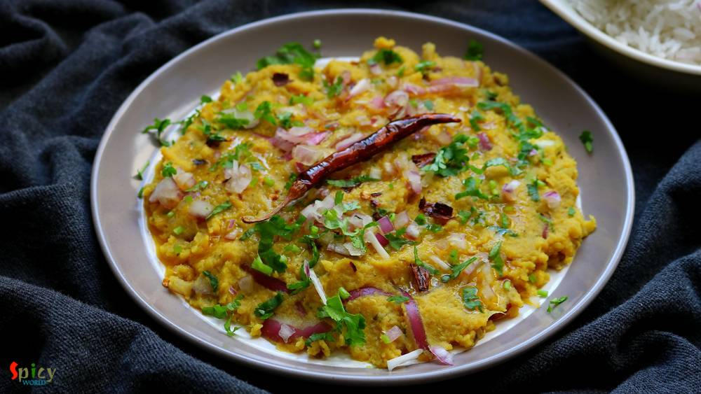
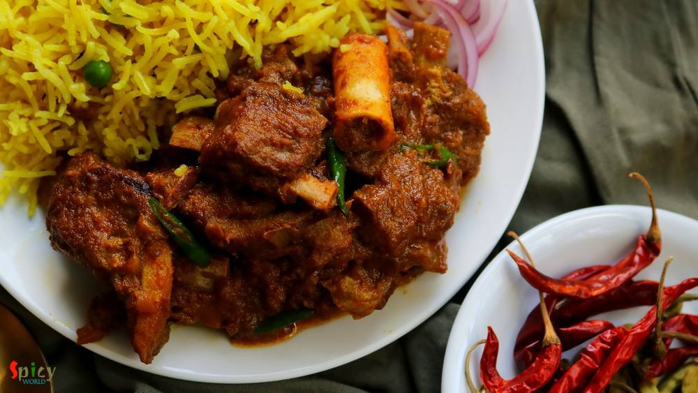
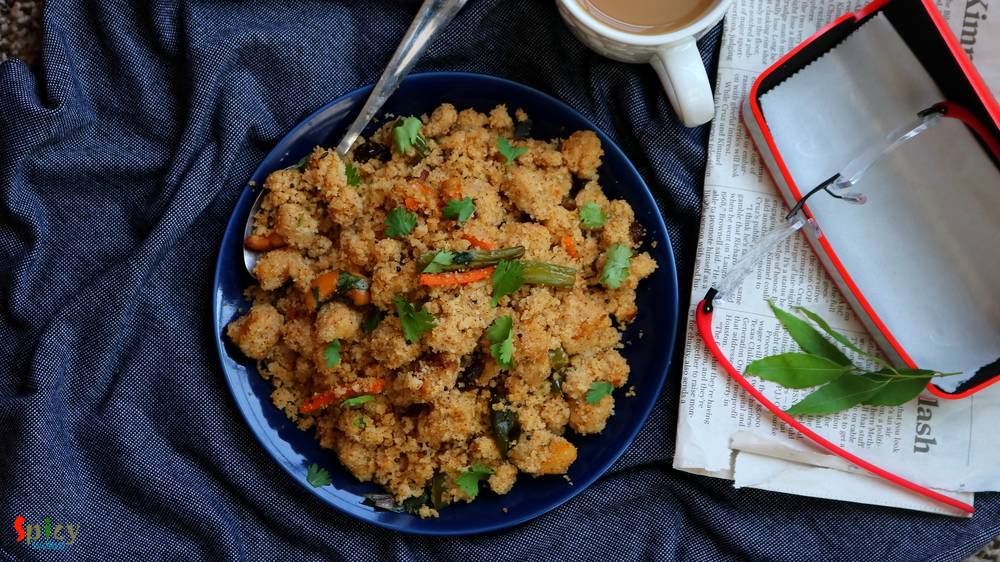
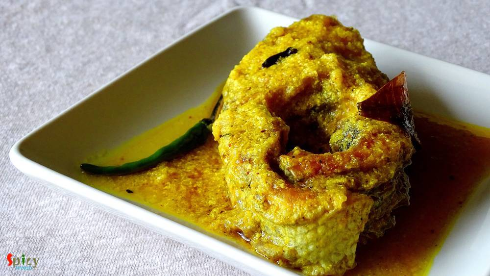
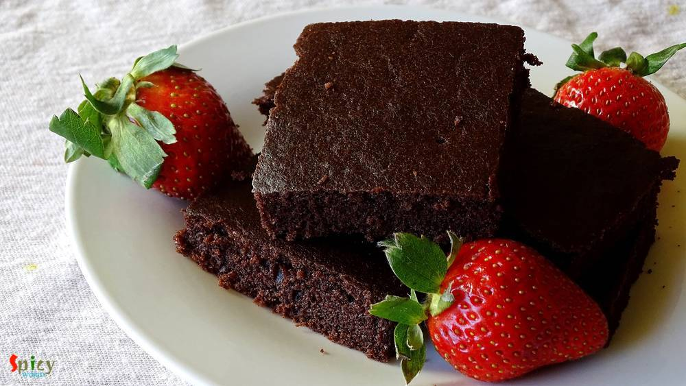
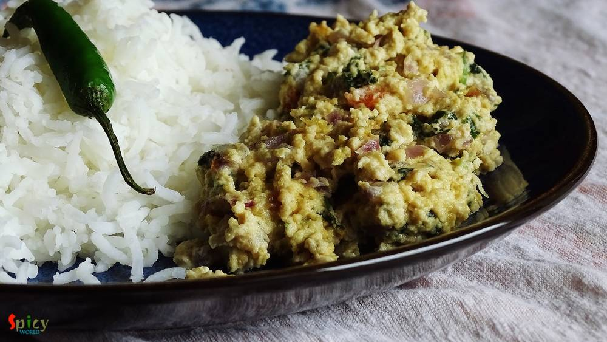
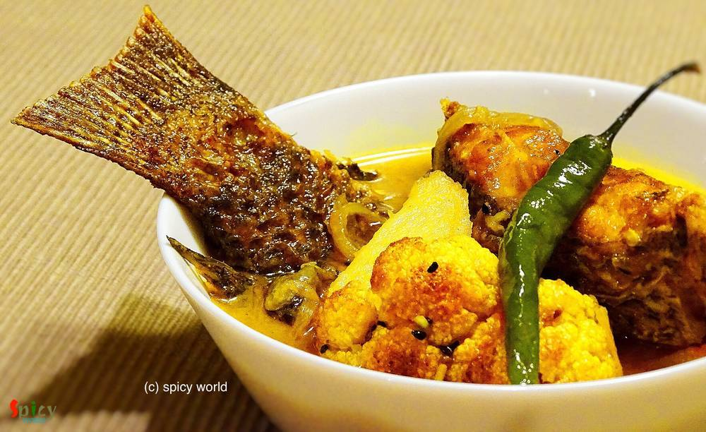
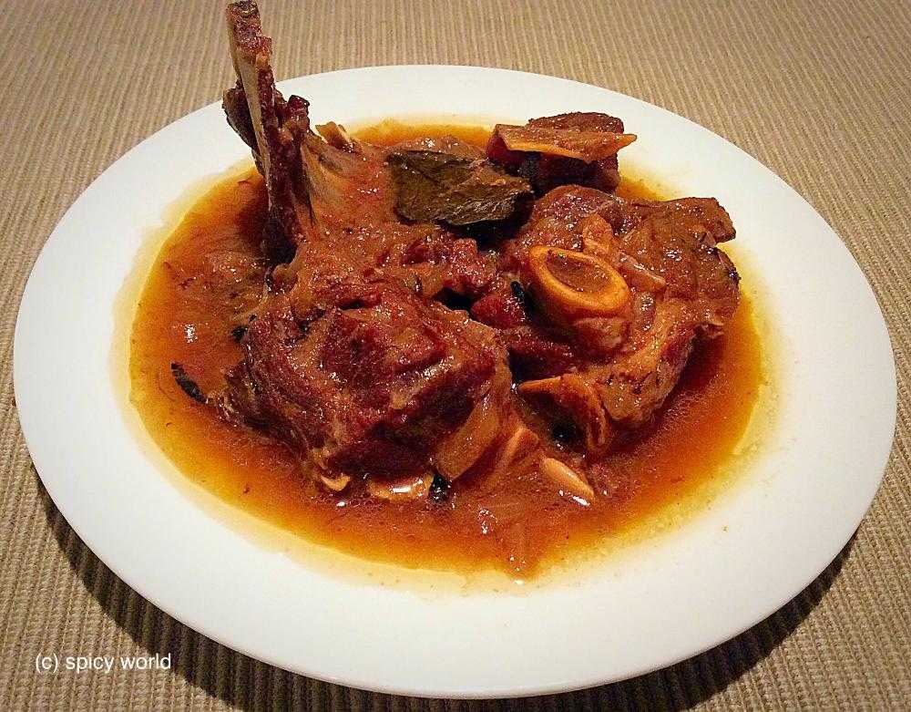

Simple and Easy Recipes
Posts on 'lunch'

Veg Recipe
May 21, 2019
Musur Daaler Bhorta is traditional Bengali recipe. Bhorta / Bharta means mashed, it can be vegetables, chicken or lentils. In this recipe we will mash the boiled orange lentils with onion, mustard oil, fried red chilies and garlic. It tastes best with steamed rice and few drops of lemon juice. During summer Musur Daaler Bhorta is a must have. Try this easy recipe in your kitchen and let me know ho ...


Nonveg Recipe
Apr 12, 2019
Chingri Macher Malai Curry is a traditional Bengali recipe rather delicacy, where Golda Chingri or Lobster is cooked in onion - tomato gravy and then addition of coconut milk makes the curry more rich and creamy, thus the name 'malai curry'. Though I made it with jumbo shrimps as we both are not fan of lobster. Taste of this Prawn malai curry came out delicious, neither too spicy nor too sweet, pe ...

Nonveg Recipe
Jan 21, 2019
Kids are always excited about their lunchbox. My mom used to make this savory pancake in my lunchbox and I loved them. You can also stuff the savory pancakes with any type of dry curry. Yesterday I made them in breakfast and they came out delicious. I mentioned 'savory' because usually we eat 'pancake' with sweet maple syrup but these can be serve with ketchup or chili sauce. Try this at your home ...

Nonveg Recipe
Oct 2, 2018
Mutton Kosha is a Bengali delicacy which can be served with plain rice / basonti pulao / luchi. Mutton kosha requires patience, kosha means slow cooking in oil and spices. Off course to hurry up the process you can use pressure cooker, but slow cooking is recommended and this mutton curry like any other curry tastes better on next day. We have one more variance of the Mutton Curry called Kosha Man ...

Veg Recipe
Sep 4, 2018
Upma is a very healthy and tasty Indian breakfast, in which the main ingredient is semolina. It is very popular in southern part of Indian. But nowadays Upma is served in many other households also. Almost twice in a week my mom used to give me 'jhal sooji'(Bengali term) in my lunchbox. It's not just me, my friends also enjoyed it. The fresh flavors of curry leaves and green chilies, proteins from ...

Nonveg Recipe
Jul 5, 2018
In Bengal, one of the common non-veg curry is 'chicken kosha'. I think everybody is familiar with this name. Kosha / Bhuna is a process where you have to cook the meat with spices on medium - low flame in its own juices, if it gets dry then only add water as less as possible. It requires time but with chicken you can make it within an hour. One can make the same curry with mutton, potato, egg etc. ...

Nonveg Recipe
May 8, 2018
'Aam Kasundi' / Mango Mustard relish : the name itself is enough to make anyone's mouth watery, isn't it ? This delicious recipe of Chingri Mach (prawn) requires minimum time and effort to achieve its best taste. Fry everything in mustard oil and make a paste out of it ... perfect for summer ! Nobody likes to be in the kitchen for long in this hot weather. So go ahead, give this simple recipe a tr ...

Nonveg Recipe
Jul 18, 2016
There are so many fish curry recipes in Bengali cuisine which calls for 'mustard' / sorshe, but this particular item is a jewel because you can cook this in microwave within 5 minutes.Yeaah you read it right ! With some steamed rice this 'sorshe chingri bhapa' tastes best. If you are a shrimp lover and also don't know about this dish, then trust me and give it a try ... you can thank me later !

Nonveg Recipe
Jul 8, 2016
This particular recipe calls for 'bombay duck fish' / loitta maach, but we couldn't get fresh bombay duck here, that's why I used rohu. 'Macher Jhuri' is nothing but a dry preparation of crumbled / mashed fish, which is typically bengali and goes best with steamed rice. Don't forget to add cubed potatoes because without them this curry will be totally incomplete. Try this easy recipe in your kitch ...

Veg Recipe
Jul 6, 2016
I find this particular recipe of pulao very relaxing and different. 'Achaar' / pickle itself is a very tasty ingredient. With rice and some veggies it creates a very beautiful dish which takes so little time to cook. If you are looking for easy but unique weeknight dinner, then 'Achaari Pulao' along with some raita and salads should be the one for you. This is a very flexible preparation, you can ...

Veg Recipe
Jun 16, 2016
Onion parathas can be anyone's savior because they are very easy to make. I know that in many households people loves to eat 'paratha' in their breakfast. Only we know about the pain of making time-consuming breakfast. But these parathas are so simple and take very less time to cook. We both thoroughly enjoyed the spicy onion filling inside those soft parathas. You can make 5 parathas with these p ...

Veg Recipe
May 19, 2016
If your milk gets curdled, don't throw away, you can do a lot with it. Well, it's bengali style 'chanar kalia' where plain curdled milk / cheese balls are first deep fried and then cooked in a tomato based gravy. It's a vegetarian delicacy of Bengali cuisine. The dish tastes awesome and goes best with plain basmati rice. In any puja or special occasion, we make this dish and it always becomes the ...

Veg Recipe
May 12, 2016
I was drawn towards this dish because of its easy method of cooking. In weekdays I never manage my time to make 'breakfast', but when I found out about this recipe where dosa batter doesn't need any farmentation ... I was interested ! You just have to rest the batter for 10 minutes, after that you can make your delicious breakfast in no time. One of the famous south indian breakfast is 'uttapam'. ...

Nonveg Recipe
Apr 18, 2016
The name sounds odd ? Well, I am not crazy, we call this mutton curry vegetarian because it has no onion and garlic. The food we usually offer to our god / godess is called 'bhog' which never contains onion and garlic. During 'kalipuja' or diwali, we Bengalis make this vegetarian mutton curry with the meat of 'pathaboli' (ritual). The taste of this curry is suprisingly delicious, even if there is ...

Veg Recipe
Apr 13, 2016
This is a very typical Bengali veg dish which you can only enjoy with steamed rice. We, bongs, have a very strong connection with 'posto' / poppy seeds and 'shorshe' or mustard seeds. We can creat so many delicious items with these two simple things. Now, 'he' is not a fan of eggplant, except fried version, to feed him this particular vegetable is really painful. I always have to make special dish ...

Nonveg Recipe
Apr 4, 2016
Cooking fried kofta / balls in a rich gravy is an old school Bengali delicacy. I guess everybody loves to eat fried balls made with paneer, vegetables, chicken, fish, mutton etc, but after soaking them in a flavouful gravy they become scrumptious. I had some fish fillets in my fridge and couldn't find any better idea than this to use them. Process of making 'Kofta Curry' is tricky and little bit o ...

Nonveg Recipe
Mar 15, 2016
This prawn curry is a family recipe and my mom-in-law is an expert of making it. It's a very common fish curry in Bengali households. We love to eat prawns in many forms, but his favorite is this one. I would suggest you to make this dish with small prawns, you will get much more flavours. First I fried the prawns, potato and cauliflowers, then cook them with gravy. Plain rice will go very well wi ...

Nonveg Recipe
Mar 4, 2015
Traditional Bengali lunch on sunday is this mutton curry along with plain rice, raw onion chunks and green chilies. After lunch we need a long nap (bhaat ghum). There was a say that we Bengalis can not eat food without potato. This is true. You have to add potatoes to this dish because there are many people like me and my husband who likes potatoes more than mutton pieces specially in this curry. ...

Nonveg Recipe
Mar 3, 2016
We bengalis usually eat 3-4 items with rice in lunch. Yess, its the family tradition in every household in Bengal. Whereas in USA, either it's lunch or dinner, I always make one curry with rice or roti. Sometimes I wonder how our moms, grand mas and mom-in-laws gets time to cook so many items. 'Doi Maach' is an another tasty bengali fish curry which goes very well with steamed rice. It's a classic ...

Veg Recipe
Mar 1, 2016
I wanted to make a vegan chocolate cake but ended up with these fluffy squares. This type of incident happens a lot with me. Actually I made the batter in less quantity with comparison of my baking tray. So, after successful baking, length of the cake was thin. The whole round was not photogenic, but don't you think these squares are too cute ?? Well, sometimes it's better to give some last moment ...

Nonveg Recipe
Feb 12, 2016
I am not a fan of dessert, but do love cakes and brownies. Some of my friends are always preparing desserts and that always keep inspiring me, so this time I thought of preparing something. As this was my first time on brownie, didn't want to take any risk. So, I've made these chocolate brownies with 'Betty Crockers' brownie mix. The result was fantastic 'he' didn't find any difference between the ...
 / Cauliflower Fritters")
Veg Recipe
Feb 8, 2016
We Indians are crazy about 'pakore' .. don't you think so ?? We make fritters out of almost everything - 'potato', 'eggplant', 'okra', 'cabbage', 'chili', 'lentils', 'chicken', 'fish' and so many more ?. 'He' adores only two vegetables in his life, one is potato and the other one is cauliflower. You can impress him with any type of cauliflower dish. So, is there any doubt about what I'm talking a ...

Nonveg Recipe
Jan 27, 2016
We both are not frequent egg eaters, but when we do, we try to make the curry yumm yumm !! One of our favourite egg curry is 'sorshe dim posto'- traditional bengali dish. 'Sorshe' means mustard seeds and 'posto' means poppy seeds. Lunch dishes always plays a big part in Bengali cuisine. There are several typically bengali dishes which you can only enjoy as lunch with steamed rice and may be after ...
 / Kosha Mangsho (Thakurbari style)")
Nonveg Recipe
Jan 26, 2016
'Thakurbari' means Rabindranath Tagore's home, which is situated at Jorashanko, Kolkata. Tagore's family is popular for many things and one of them is 'cooking'. Nowadays, you can watch plenty of cooking programmes in TV, but when I was in school, only few magazines used to publish cooking recipes on weekends only. The craze was also different in that time. I still can remember how my mom and gran ...

Nonveg Recipe
Jan 26, 2016
Its winter, the season of colourful veggies... One of my favourite veggie is 'green peas' / Koraishuti. You can make so many items with these tiny green balls like, 'matar paneer', 'peas kachori', 'dum aloo with peas', 'khichdi', 'veg daal', 'cabbage curry with peas' etc. But 'fish curry with green peas paste' may seems new to somebody. Its nothing but a dry fish curry with a tasty extra addition ...
 / Potato and Cauliflower curry / Aloo Fulkopir torkari")
Veg Recipe
Jan 25, 2016
We, nonvegetarian people, generally ordered nonveg dishes while eating at restaurants or dhabas. But we also love to eat home cooked vegetarian meals. In one of our trip to Digha before marriage, we made a stop at the famous 'Sher-e-punjab' for heavy breakfast. We ate there several times before but never did breakfast, so, that was our first time. As it was morning, we orderd veg like 'aloo parath ...

Nonveg Recipe
Jan 19, 2016
As I am Bengali, my favourite fish curry is this one. My husband is also a huge fan of fish and specially this curry. It goes best with hot plain rice. This is a very easy process and the recipe is pretty simple. Try this in your kitchen and let me know how it tastes.
 / Kolaier Daal")
Veg Recipe
Dec 15, 2015
Soul food means the food which you can enjoy from the bottom of your heart while eating. Being a bengali I always face a common question- 'fish and posto(poppy seeds) are your soul food, right?'. And my answer is always 'oh, hell yaa' ... ? Today I will talk about vegetarian food. We always make 'biulir daal' / 'urad daal' with posto. The combo is nothing but heavenly. There is a must ingredient ...

Veg Recipe
Nov 28, 2015
I think almost every Bengali is familiar with this name. I love 'posto' or poppy seeds in any form. I made this dish on yesterday lunch along with some steamed rice. The fresh flavour of mustard oil and poppy seed paste always makes me crazy. I made it in microwave but you can also make this in oven. Try this in your kitchen and let me know how it turns out.
")
Veg Recipe
Nov 17, 2015
Bengali without posto(poppy seed)? - impossible. Bengali without aloo(potato)? - no way. I specially can't live without these two. 'Aloo posto' or 'aloo fulkopi posto' is my favourite weekday's lunch with steamed rice and hot daal. My hubby is very fond of 'fulkopi' (cauliflower), that's why I added this in the gravy. But if you don't like you can totally skip this part. The most simple and easy r ...
")
Nonveg Recipe
Nov 9, 2015
This lentil soup is one of the traditional food in Bengal. Last weekend I had two fish heads in my fridge. I am personally not too much fond of plain fish head curry. So, I made this dish and it came out really perfect like 'biyebari'. In most of the bengali wedding this dish is must for lunch and everybody loves it. I ate the home made version of this daal twice from my mom. Those times I really ...

Nonveg Recipe
Nov 6, 2015
Bengalis make various kinds of fish curry with different types of fishes. The most simple and easy one is 'macher jhol' or fish curry. 'Jhol' means runny version of a curry. This dish is usually served as lunch with steamed rice and we all are fan of it. In 'macher jhol' you can use rohu / katla / tilapia / pomfret / pabda etc. One can add many kinds of vegetables like potato, cauliflower, eggplan ...
")
Nonveg Recipe
Oct 23, 2015
In Bengali ceremony preparing any dish with fish head is a very good sign. There are plenty of dishes where they use fish head. But 'muri ghonto' is the delicacy of Bengal. I learned this dish from my mom. There are also some variations of muri ghonto. Some uses yellow lentil or flattened rice instead of gobindovog rice. But I prefer this dish what my mom used to make.

Nonveg Recipe
Oct 20, 2015
During summer we generally avoid to eat rich food. But when it comes to mutton, the decision become difficult ?. For this kind of situation 'mutton stew' is the perfect food for all. The recipe is very simple and have some mild flavours. You will love this when you make it.
")
Nonveg Recipe
Oct 14, 2015
We Bengalis are very fond of fish. Our common meal is fish curry and rice. This recipe is one of the fish curry which we make in occasions and gatherings. I already gave you one kaliya recipe and this one is also very tasty. Try this at your home and let me know how it turns out.

Veg Recipe
Oct 1, 2015
When you are in a mood of healthy eating, just give it a try ... You will find peace during eating this khichdi because it has some mild flavours and healthy ingredients. This is a meal which you can not ignore.
")
Veg Recipe
Sep 26, 2015
According to me comfort food means hot plain rice, lentil soup (daal), one lemon slice, mashed potato with fried onion, one green chili and lots of 'red lentil fritters'. I know every person has their own comfort food. But isn't it become more comforter when your mom serve this plate with her love and care. It definitely is. I learned this recipe from her. Just give it a try.

Nonveg Recipe
Sep 23, 2015
In Bengali's weekdays lunch menu fish has to be there. There is a say 'mache-bhate-bangali' indicates our common meal is fish curry and rice. This is a special dish for party, occasions or gatherings. Macher kaliya goes very well with sweet pulao, fried rice or even plain rice.
")
Veg Recipe
Sep 21, 2015
Whenever you are going to describe anything about Bengali, you have to mention 'posto'/poppy seeds. They make planty of dishes with posto like 'piyaj posto', 'potol posto', 'posto bora' etc and they all are my favourite dishes. 'Aloo Posto' is one of the popular item among the posto category. You will love to eat this with hot plain rice and daal.